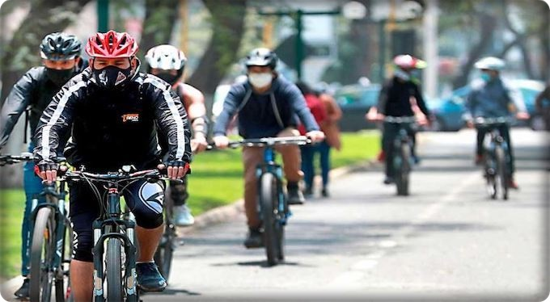

¡SEAN BIENVENIDOS A CLIMBIKES!

¿Quiénes somos?
Somos una academia que trabajamos mano a mano con nuestros estudiantes por el amor a este deporte, formando buenos deportistas aptos, tanto como para participar en competencias y ser un profesional o simplemente por ócio.
Nuestra misión:
Fomentar este deporte para que más personas se animen a practicarlo, brindando a sus asociados, familiares e invitados un ambiente agradable. Calidad en las actividades a desarrollar, departiendo y estrechando lazos de amistad.
¿Por qué elegirnos?
- Facilitamos desde metodologías de entrenamiento, bicicletas y herramientas del deporte, y hacemos seguimiento para lograr el progreso contínuo en esta disciplina.
- Facilitamos el acceso a bicicletas de segunda mano para empezar con los entrenamientos.
- Brindamos material teórico sobre el deporte, metodologías de entrenamiento, fichas de seguimientos, etc.
- Brindamos talleres de capacitación para atletas y entrenadores, hacemos seguimiento para el aprendizaje de figuras básicas a avanzadas.
- ¡Buscamos personas interesadas en promover el deporte!
Beneficios del ciclismo:
La práctica de muy pocas actividades tienen tantos beneficios para la salud, el medio ambiente y la economía como el ciclismo. El ciclismo tiene muchos beneficios, algunos son más conocidos que otros y, además de que todos podemos disfrutar de ellos fácilmente. Son mucho más extensos que ahorrarte tiempo en tus traslados, dinero en la manutención de un automóvil particular o el pasaje del transporte público. 1. Mejora las funciones cognitivas 2. Fortalece tu sistema inmunológico 3. Te expone a menos contaminantes que en auto 4. Incrementa la expectativa de vida 5. Reduce el riesgo de enfermedades 6. Fortaleces más que los músculos de las piernas 7. Evita la obesidad y mejora el control del peso 8. Reduce los niveles de estrés.